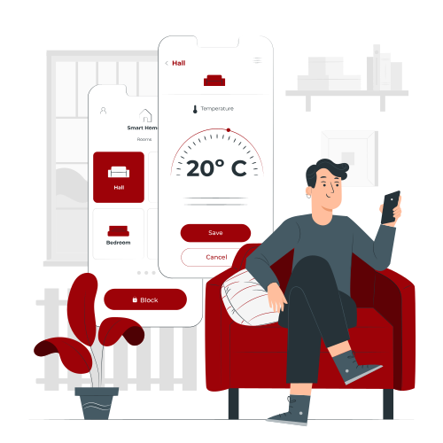

<ion-header [translucent]="true">
  <ion-toolbar>
    <ion-title> TempMinder </ion-title>
  </ion-toolbar>
</ion-header>

<ion-content [fullscreen]="true">
  <ion-card>
    
  </ion-card>
  <div class="datos">
    <ion-card>
      <ion-card-header>
        <ion-card-subtitle>
          <ion-title style="color: white;">
            El sensor detecta una temperatura de:
          </ion-title>
          </ion-card-subtitle
        >
        <ion-card-title>
          <ion-item>
            {{ item | async | json }} 
          </ion-item>
        </ion-card-title>
      </ion-card-header>
    </ion-card>

    <ion-card>
      <ion-card-header>
        <ion-card-subtitle>
            <ion-title style="color: white;">
              Estado:
            </ion-title>
          </ion-card-subtitle>
        <ion-card-title>
          <ion-item>
            {{ itemEstatus | async | json }}
          </ion-item>
        </ion-card-title>
      </ion-card-header>
    </ion-card>
  </div>
  <br />

  <!-- <ion-fab
    slot="fixed"
    horizontal="center"
    vertical="bottom"
    class="botonGrande"
  >
    <ion-fab-button color="danger" class="iniciarBoton">
      INICIAR
      <ion-icon name="chevron-forward"></ion-icon>
    </ion-fab-button>
  </ion-fab> -->
</ion-content>
